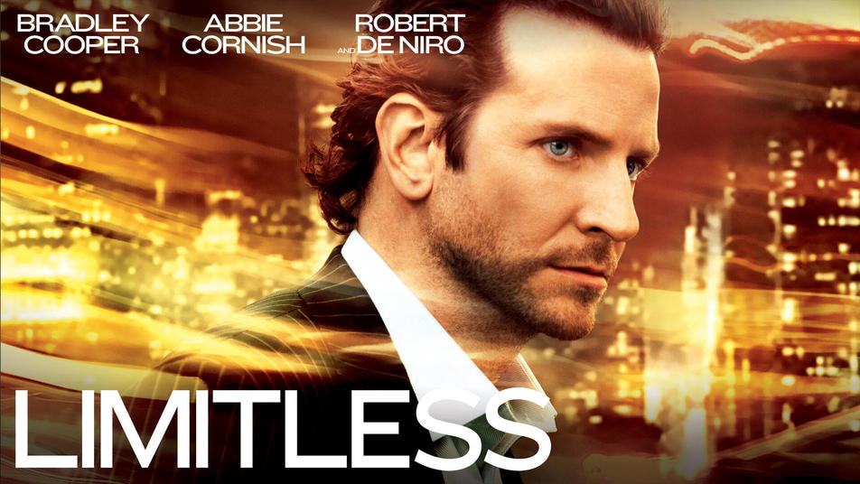

Sem Limites (em inglês: Limitless) é um filme estadunidense, um techno-thriller dirigido por Neil Burger. Com roteiro de Leslie Dixon, baseado no romance The Dark Fields, de Alan Glynn, e estrelado por Bradley Cooper e Robert De Niro. O filme foi lançado pela Relativity Media em 18 de março de 2011.
Premios e indicações
- Indicado: Choice Movie Actor: Drama - Bradley Cooper
- Indicado: Choice Movie: Drama
- Scream Awards Venceu: Melhor Thriller
Sinópse

Eddie Morra (Bradley Cooper) é um escritor que vive em Nova York e recentemente termina com sua namorada Lindy (Abbie Cornish), não tendo ainda conseguido cumprir o prazo de entrega do seu novo livro (o qual ainda não está escrevendo). Em um certo dia, Eddie encontra Vernon Gant (Johnny Whitworth), o irmão de sua ex-mulher Melissa Gant (Anna Friel), Vernon é um negociante de drogas (remédios) que oferece a Eddie um amostra de uma nova droga, NZT-48. Eddie aceita, e para sua surpresa, a droga aumenta sua inteligência e melhora sua concentração, o cérebro que normalmente usado em 20% de seu limite, passa a ser usado em 100%, todos os sentidos tornam-se aguçados e uma nova visão sobre os problemas de sua vida começam a surgir.
Bilheteria

Os analistas não davam muito por Sem Limites (Limitless), mas o suspense de ficção científica da Relativity Media levou a bilheteria dos EUA neste fim de semana, com US$ 19 milhões em 2.756 cinemas. Nesse ritmo, o filme dirigido por Neil Burger (O Ilusionista) vai empatar o seu custo de US$ 27 milhões na semana que vem..
Crítica
 François Truffaut: Crítico Cinematográfico
François Truffaut: Crítico Cinematográfico
Sem Limites é um projeto menor, mas que chegou aos cinemas tomado por um cuidado muito especial. Essa época do ano é um período particularmente delicado, pois há pouco saímos da temporada do Oscar – com os filmes mais elogiados do ano – e ainda não entramos na corrida dos blockbusters, quando as superproduções entram em cartaz arrebatando milhões e atropelando concorrentes. Assim, com o mercado aparentemente em baixa, qualquer um que consiga se destacar e chamar atenção irá captar uma fatia do público carente por boas histórias e astros em ascensão. Ou seja, justamente esse caso. E se o filme peca por alguns excessos – beber sangue, não! – ao menos é dinâmico o suficiente para prender o espectador, que permanece ligado a cada novo acontecimento. E sai da história se perguntando: "faria eu diferente se fosse comigo?"